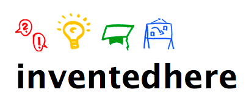

Why use zeitdruck?
A task expands to the amount of time you allow for it. That's why we believe in strict time constraints. We achieve this by using a visual count-down timer: zeitdruck.
How to
Drag the hand to set the time.It immediateley starts ticking down.Use [space] to pause if you need a break. [←][→] to add/substract 1 minute. [↑][↓] to add/substract 5 minutes.